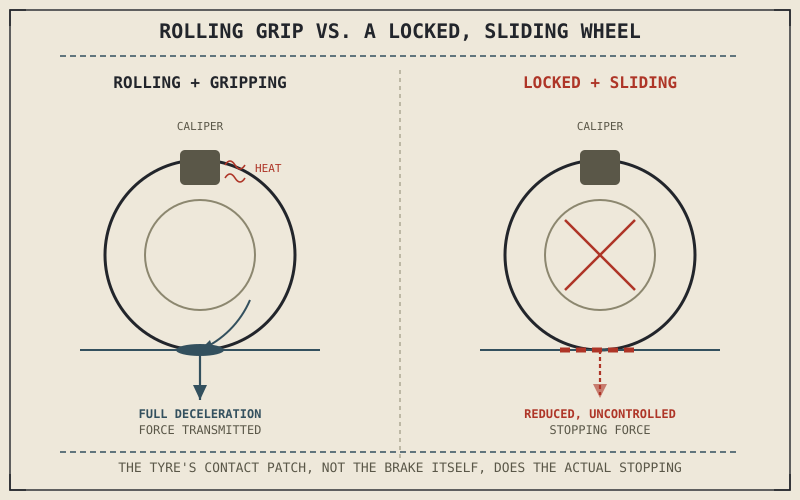

Every part of this book so far has been about generating and managing motion — power from the engine, delivery through the transmission, direction from the chassis, control from the suspension, and grip from the tyre. Braking is the first system whose entire job is the opposite: taking motion away, deliberately and on demand, converting the kinetic energy this book has spent six parts building up into something else entirely, as fast as the rider needs it gone.
Chapter 6.8 closed Part VI with a promise that this book would next explain how a motorcycle sheds the energy it generates. This chapter opens Part VII by explaining exactly what that job involves, before the coming chapters cover how the hardware actually does it.
Where the Speed Actually Goes
A moving motorcycle carries kinetic energy in direct proportion to its mass and the square of its speed, and stopping means that energy has to go somewhere — it can't simply vanish. Braking converts it into heat, generated by friction between the brake pads and the rotating disc, and that heat is then radiated away into the surrounding air. This is worth stating explicitly because it reframes what a brake actually is: not a device that "stops the wheel," but an energy-conversion system, turning motion into heat fast enough to bring the whole motorcycle to a controlled halt. Chapter 7.2 will turn this into an actual force and torque calculation; for now, the essential point is that braking's job is thermal and mechanical at once, not simply mechanical.
Braking Doesn't Stop the Wheel — It Stops the Tyre From Slipping Past the Road
A brake's direct mechanical action is slowing the wheel's rotation, but the wheel itself isn't what actually needs to decelerate — the whole motorcycle does, and that deceleration can only happen through the tyre's contact patch, exactly the same contact patch Part VI spent eight chapters explaining. A brake that slows the wheel faster than the tyre's available grip can match doesn't stop the motorcycle any faster; it simply locks the wheel and lets the tyre slide against the road, which Chapter 6.4's friction circle already explained produces less usable force than a tyre still rolling and gripping. Effective braking is fundamentally a grip problem wearing a mechanical disguise, which is exactly why this part sits directly after the one explaining tyres rather than immediately after the chassis or suspension.
A brake doesn't stop a motorcycle directly — it slows the wheel, and the tyre's contact patch does the actual work of converting that into deceleration. Ask for more braking force than the tyre can grip, and the wheel locks without stopping the bike any faster.

A motorcycle wheel shown with brake friction converting rotational motion into heat at the disc, and an arrow tracing that force down through a still-rolling, gripping tyre onto the road, contrasted with a locked, sliding wheel producing less stopping force.
A Common Misconception, Cleared Up Early
It's natural to assume that squeezing the brake lever harder always produces more stopping force, the way pressing the throttle harder always produces more acceleration up to the engine's limit. Braking doesn't work that way past a certain point, because the limiting factor usually isn't the brake system's mechanical capability at all — modern brakes can typically lock a wheel quite easily — but the tyre's available grip. Beyond the point where grip runs out, more lever pressure doesn't produce more deceleration; it just locks the wheel sooner and converts a controlled stop into a slide. This single distinction is the foundation for nearly everything the rest of this part will explain about brake system design and technique.
Where This Leads
Understanding braking as an energy-and-grip problem sets up the actual mechanics of how much stopping force a brake system can generate and how that force is distributed. Chapter 7.2 turns to brake force and stopping torque directly, giving this chapter's ideas an actual physical basis.
Key Concepts to Remember
- Braking converts a motorcycle's kinetic energy into heat through friction at the brake disc, not simply mechanical rotation stopping.
- A brake directly slows the wheel, but actual deceleration happens through the tyre's contact patch, tying braking directly to the grip concepts from Part VI.
- Beyond the tyre's available grip, more brake lever pressure doesn't produce more stopping force — it locks the wheel and produces a slide instead.
Cross-References
| ← Ch. 6.8 | Closed Part VI with the promise that this book would next explain how a motorcycle sheds the energy it generates; this chapter opens Part VII with that explanation. |
| ← Ch. 6.4 | Established the friction circle and why a sliding tyre produces less usable force than a gripping one; this chapter applies that directly to braking. |
| → Ch. 7.2 | Covers brake force and stopping torque directly, giving this chapter's energy-and-grip framing an actual physical basis. |